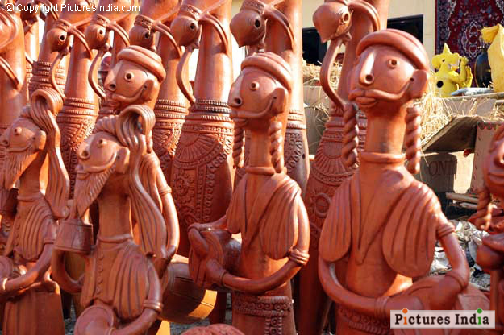
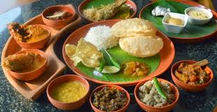
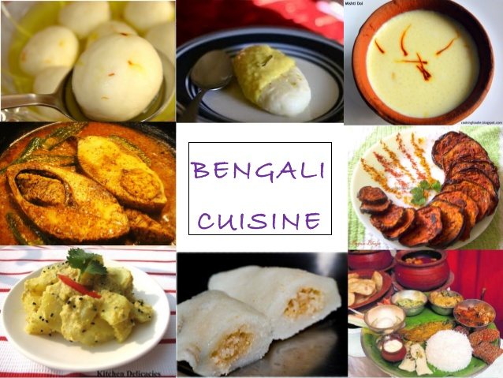
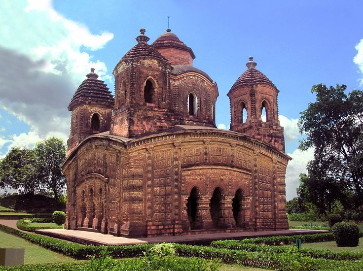

The culture of West Bengal is an Indian Culture which has its roots in the Bengali literature, music, fine arts, drama and cinema. Different geographic regions of West Bengal have subtle as well as more pronounced variations between each
other, with Darjeeling Himalayan hill region and Duars showing particularly different socio-cultural aspects.
West Bengal's capital Kolkata—as the former capital of India—was the birthplace of modern Indian literary and artistic thought,and is referred to as the "cultural [or literary] capital of India". The presence of paras, which are cluster
of neighbourhoods that possess a strong sense of community, is characteristic of West Bengal.Typically, each para has its own community club and, on occasion, a playing field. Residents engage in addas, or leisurely chats, that often
take the form of freestyle intellectual conversation. However, with the growth of apartments, expansion of neighbourhoods and rapid urbanization, this culture is on decline. Adda is very common among the old peoples. West Bengal has a
long tradition of popular literature, music and drama largely based on Bengali folklore and Hindu epics and Puranas.
Fine arts

There are significant examples of fine arts in Bengal from earlier times such as terracotta art of Hindu temples, Kalighat paintings etc. Bengal has been the harbinger of modernism in fine arts of India. Abanindranath Tagore, called the
father of Modern Indian Art had started the Bengal School of Art which was to create styles of art outside the European realist tradition which was taught in art colleges under the colonial administration of the British Government.
The movement had many adherents like Gaganendranath Tagore, Benode Behari Mukherjee, Ramkinkar Baij, Jamini Roy and Rabindranath Tagore. After Independence, important groups like the Calcutta Group and the Society of Contemporary Artists
were formed in Bengal which dominated the art scene in India. Graffiti cannot be generally categorised as a fine arts or aesthetic creation, but it has become an inseparable part of popular street-art. It is mainly for political
propaganda.
Cuisine


West Bengal shares its distinctive culinary tradition with neighbouring Bangladesh, and also borrows from other Indian states. Boiled rice and roti constitute the staple Bengali food, and is served with a variety of vegetables, fried as
well with curry, thick lentil soups, and fish, egg and meat preparations of mutton and chicken, and more rarely pork, duck, lamb and beef by certain groups.
Sweetmeats are mostly milk based, and consist of several delights including roshgulla, doi, sandesh, rasamalai, amriti, kalo jamun, pantua, rajbhog, gaja, bonde, pithe, mihidana, laddu and chom-chom. Several other sweet preparations are
also available. Bengali cuisine is rich and varied with the use of many specialized spices and flavours. Fish is the dominant source of protein, cultivated in ponds and fished with nets in the fresh-water rivers of the Ganges delta.
Architecture

Architecture of Bengal includes various types of motifs as well as it represents the different eras of the region. Terracotta, Islamic, Indo-Saracenic, British architecture etc. include many temples, mosques, churches, palaces, forts,
monasteries and rajbaris. British Calcutta was known as the 'City of Palaces', while modern city has large number of apartments and housing complexes which characterize all metropolis of the world. Bengali village housing is noted as the
origin of bungalow.